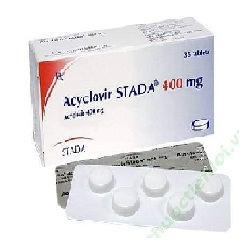

Acyclovir

Acyclovir ဆိုတာ
- ဗိုင္းရပ္ပိုးသတ္ေဆး ျဖစ္ၿပီး အဓိကအေနနဲ႔ ေရယုန္ေရာဂါမွာသံုးပါတယ္။
- ေရယုန္ျဖစ္ေစတဲ့ Herpes ပိုးပြားႏႈန္းနဲ႔ ျပန္႔ပြားႏႈန္းကို ေလွ်ာ့ခ်ေပးၿပီး ေရယုန္လကၡဏာကိုသက္သာေစပါတယ္။
- လိမ္းေဆး၊ေသာက္ေဆး၊ေဆးရည္ ပံုစံအမ်ိဳးမ်ိဳးရွိပါတယ္။
အသံုးဝင္ပံု
- ပါးစပ္ေရယုန္၊ ခါးပတ္ေရယုန္၊ လိင္အဂၤါေရယုန္စတဲ့ ေရယုန္အမ်ိဳးမ်ိဳးကို သက္သာေစပါတယ္။
- ေရေက်ာက္ျဖစ္ေစတဲ့ ဗိုင္းရပ္ပိုးကို ကုသရာမွာလည္း သံုးပါတယ္။
- ခုခံအားက်ေနတဲ့ လူေတြမွာ တျခားေရာဂါပိုးဝင္တာကိုလည္း ေလွ်ာ့ခ်ေပးႏိုင္ပါတယ္။
ေသာက္သံုးပံု
- ဆရာဝန္ညႊန္ၾကားတဲ့ အတိုင္း တစ္ေန႔ ႏွစ္ ႀကိမ္ကေန ငါးႀကိမ္အထိ ေသာက္ဖို႔လိုပါမယ္
။
- ေဆးရည္ေသာက္ရင္ ပုလင္းကို ေသခ်ာလႈပ္ၿပီးမွ ေသာက္ပါ။
- ခႏၶာကိုယ္ေလးခ်ိန္ ေပၚမူတည္ၿပီး ေသာက္ရတဲ့ ေဆးပမာဏ မတူပါဘူး
ေဘးထြက္ဆိုးက်ိဳးမ်ား
ေခါင္းကိုက္ျခင္း၊ ပ်ဳိ႕အန္ျခင္း၊ ဝမ္းပ်က္ျခင္း၊ ထင္ေယာင္ထင္မွားျဖစ္ျခင္း၊ လႈပ္ရွားမႈ ေႏွးေကြးေလးလံ သြားျခင္းမ်ား ျဖစ္ႏိုင္ပါတယ္။
ေရာဂါလကၡဏာ ဆိုးရင္ေတာ့ဆရာဝန္သြားျပဖို႔လိုပါတယ္။
AIDSေရာဂါ၊ ရိုးတြင္းျခင္ဆီအစားထ္ိုးျခင္း၊ ေက်ာက္ကပ္လဲျခင္းမ်ား ျပဳလုပ္ထားရင္ ေတာ့ ေဆးမတည့္တဲ့ လကၡဏာ ပိုျပႏိုင္ပါတယ္။
သတိျပဳရန္အခ်က္မ်ား
- Acyclovir အုပ္စုဝင္ Valacyclovir ေဆးအုပ္စုနဲ႔ မတည့္ဖူးတဲ့ ျပသနာရင္၊ တျခားေဆးေတြနဲ႔ ဓာတ္မတည့္ဖူးရင္၊ တျခားေရာဂါအခံ ရွိရင္ ဆရာဝန္ကိုႀကိဳေျပာထားရပါမယ္။
- Acyclovir ေဆးသံုးေနစဥ္ အရက္၊ ေဆးလိပ္ေသာက္တာေလွ်ာ့ရပါမယ္။
- ေရယုန္ေရာဂါျဖစ္ပြားေနစဥ္ ပါတနာကို ေရာဂါမကူးစက္ဖို႔အတြက္ အတူတူေနရင္ အကာအကြယ္သံုးရပါမယ္။
- ကိုယ္ဝန္ေဆာင္သည္နဲ႔ ႏို႔တိုက္မိခင္ေတြကလည္း ဆရာဝန္နဲ႔ ေသခ်ာတိုင္ပင္ၿပီးမွ သံုးသင့္ပါတယ္။
ေဆးအာနိသင္
- တိုင္းရင္းေဆး၊ ျမန္မာေဆး တျခားေဆးမ်ားနဲ႔ တြဲေသာက္ရင္ ေဆးအာနိသင္ေျပာင္းသြားႏိုင္လို႔ မေသာက္ခင္ ဆရာဝန္နဲ႔ ေဆြးေႏြးတိုင္ပင္သင့္ပါတယ္။
ေဆးအရွိန္လြန္ျခင္း
- ေဆးေသာက္လြန္ရင္ အလြန္အမင္းပ်ိဳ႕အန္ျခင္း၊ ဆီးသြားနည္းျခင္း၊ ႏံႈးျခင္း၊ စိတ္ဂနာမၿငိမ္ျဖစ္ျခင္းနဲ႔ သတိလစ္တဲ့အထိ ျဖစ္ႏိုင္ပါတယ္။
Source– ေဒါက္တာ အိမ့္ခ်ယ္ရီ